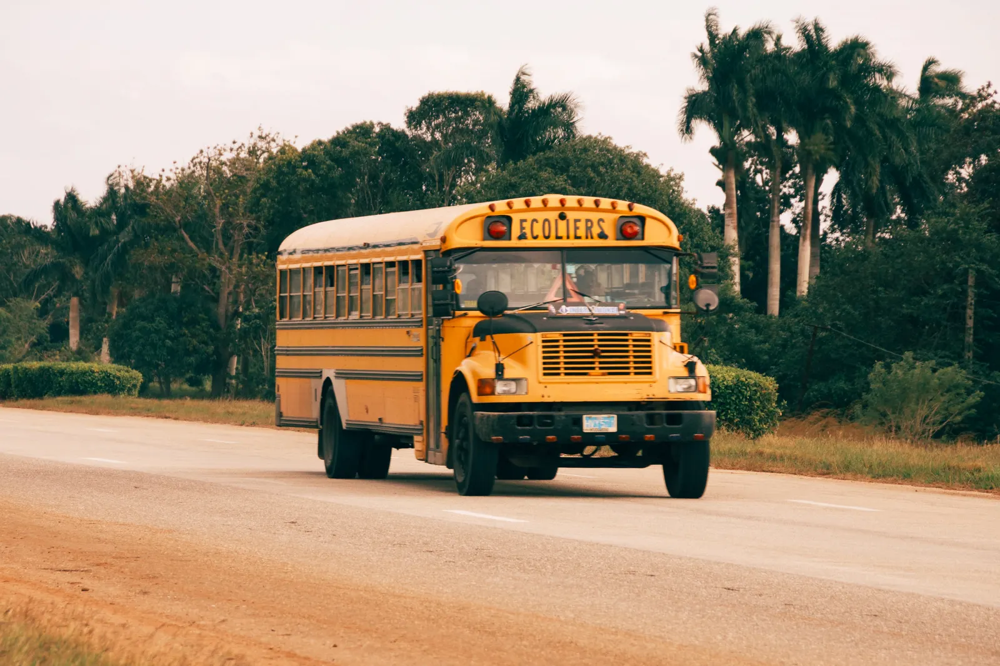

Visible routes
Maps and stop information turn a vague commute into a clear plan.
An alternate WAYBELL homepage for families who want the essentials: route visibility, clear plans, and practical support.

See where a route starts, which stops it serves, and when the bus is expected to reach school.
Profiles, updates, plans, and receipts.
A consistent, easy-to-understand routine.
Maps and stop information turn a vague commute into a clear plan.
Choose one-way, return, or family-oriented demo plans.
Contact and FAQ pages provide a straightforward next step.
Move from overview to tracking, students, subscriptions, receipts, travel logs, notifications, settings, and help without leaving the page.
Open parent portal